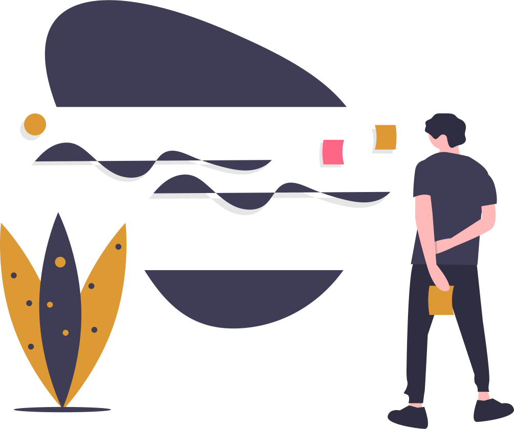
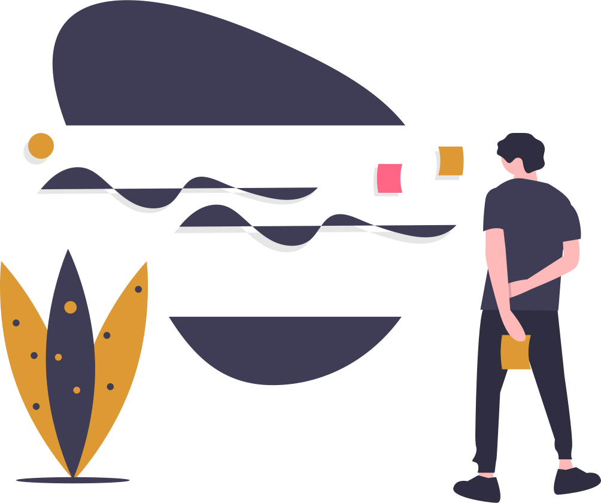
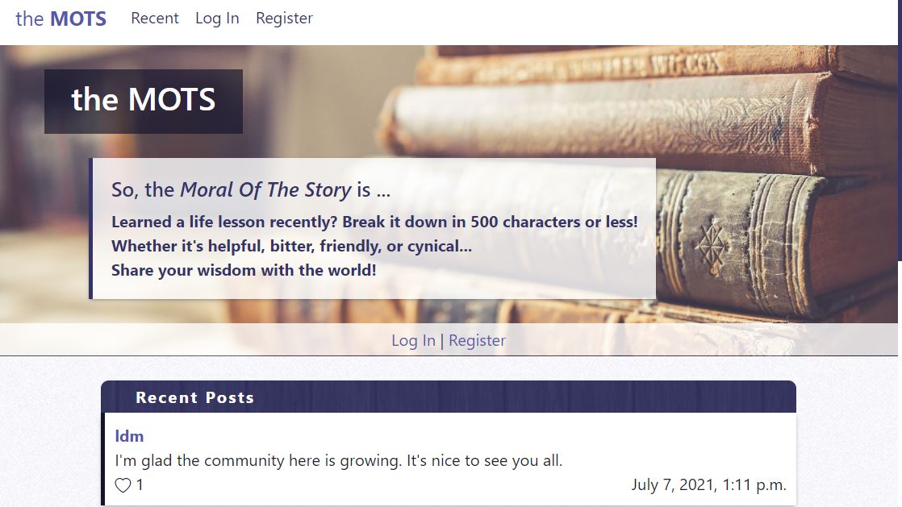
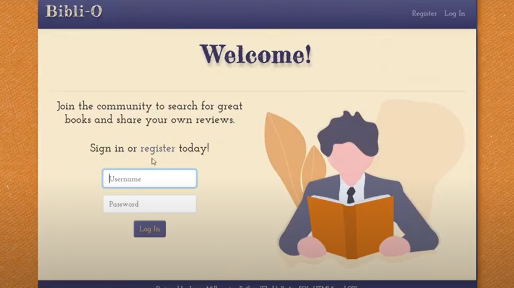

Welcome!
I am a detail-oriented programmer with a love for communicating ideas creatively and finding new solutions collaboratively - guided by my background in education.
Welcome to my portfolio, where you will find projects that highlight my skill in full-stack web development.
larrymillerprogramming@gmail.com
About Me
I grew up in the mountains of West Virginia, always focusing on the creative parts of life, like art and music. In the age of Xanga and MySpace, I also used HTML and CSS as a creative outlet for myself and for friends. I didn't understand how much I was truly learning about front-end design until I returned to coding in my adult life.
My childhood obsession with HTML and CSS has led me to dive deeper into web development. My goal is to remain well-rounded in full-stack development,
learning creative front-end design and working with a variety of back-end frameworks.
As a programmer, I strongly value my background in the arts and education.
It has greatly influenced my organization, creativity, patience, and problem-solving skills.
My preferred language is Python (including Flask and Django).
Be sure to check out my projects to see the skills I have featured.
Recent Projects
Moral Of The Story

Featured:
Python(Django), JSON, JavaScript, SQLite, Heroku, HTML5, CSS3, Bootstrap4
Social networking web app for sharing life's little wisdoms. Utilizes Javascript’s Fetch API to handle data seamlessly.
Bibli-O

Featured:
Python(Flask), Goodreads API, PostgreSQL, HTML5, CSS3, Bootstrap4
A community-based web app for sharing book reviews, utilizing the Goodreads API and Heroku's PostgreSQL.
Make-A-Habit

Featured:
HTML5, CSS3, React.js, JSX
A web application (React front-end) designed to create and track positive habits.
Kathleen Dunn Portfolio

Featured:
HTML5, CSS3, Bootstrap4
Utilizes many Bootstrap features to create an engaging portfolio for singer and choral director, Kathleen Dunn.
Resume
Larry D. Miller
larrymillerprogramming@gmail.comGitHub: larrymillerprogramming
ABOUT
While growing up in West Virginia in the age of Xanga and MySpace, I loved the creative possibilities of HTML and CSS. As I returned to coding as an adult, I began working with back-end technologies to understand web development more fully. I have a strong background in education and the arts, which guide my organization and collaboration skills.
EXPERIENCE WITH
CSS3/SASS
JavaScript
Bootstrap4
Django
Flask
React.js
PostgreSQL
JSON
Heroku
PROJECTS
Django / PostgreSQL / JavaScript
Social networking web app for sharing life's little wisdoms.
Flask / PostgreSQL / API
Book review web app, using Heroku and the Goodreads API.
React.js / HTML / CSS
React front-end design for a habit-tracking web app.
HTML / CSS / Bootstrap4
Utilizes many Bootstrap features to create an engaging portfolio for singer and choral director, Kathleen Dunn.
Master of Arts in Teaching (4.0)
Bachelor of Music: Music Education (3.9)